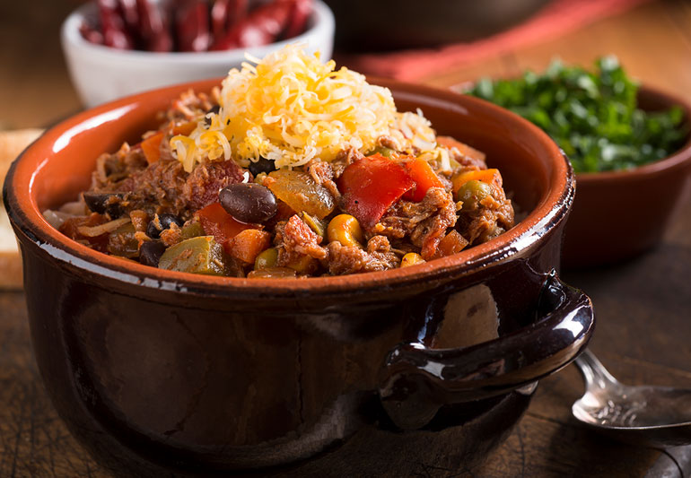

The Best Chili Recipe

The Best Bowl of Chili You'll Ever Eat
There are a thousand ways to make chili, but this is the quintessential, totally classic version. We used ground beef, kidney beans and the perfect blend of spices. You can slather it on hot dogs and burgers or serve it as a dip, but it can
surely stand on its own. Chances are, you have everything you need right in your pantry. Top it with your favorite garnishes and serve with plenty of tortilla chips.
| Prep Time |
Cook Time |
Total Time |
Serves |
| 25 mins. |
1 hr. |
1 hrs 25 mins |
4-6 servings |
Ingredients
- 1/4 cup vegetable oil
- 1 pound ground beef chuck, preferably coarse grind (see Cook's Note)
- 1 large yellow onion, diced
- 1 jalapeno pepper, seeded and diced
- 4 cloves garlic, minced
- 2 tablespoons chili powder
- 1 tablespoon ground cumin
- 1 tablespoon paprika
- 1/4 teaspoon cayenne pepper
- Kosher salt and freshly ground black pepper
- 2 teaspoons tomato paste
- 1 1/2 cups low-sodium beef broth
- One 28-ounce can whole peeled tomatoes, crushed
Toppings
- Two 15.5-ounce cans kidney beans, undrained
- Sour cream, shredded Cheddar and sliced scallions, for serving
- Tortilla chips, for serving
How to make Chili in 7 Steps
- Step 1: Heat 2 tablespoons of the oil in a Dutch oven or large pot over medium-high heat. Add the beef and cook, breaking up the meat with a wooden spoon, until just browned, about 4 minutes. Transfer to a plate with a
slotted spoon.
- Step 2: Reduce the heat to medium and add the remaining 2 tablespoons oil. Add the onions and cook, stirring occasionally, until softened and lightly golden, about 10 minutes.
- Step 3: Add the jalapeno and cook, stirring occasionally, until softened, about 5 minutes. Add the garlic and cook, stirring frequently, until fragrant, about 30 seconds.
- Step 4: Add the chili powder, cumin, paprika, cayenne, 1/2 teaspoon salt and the tomato paste. Cook, stirring frequently, until coated and fragrant, about 1 minute.
- Step 5: Stir in the beef broth and crushed tomatoes and bring to a boil over high heat. Stir in the cooked ground beef and any accumulated liquid, then reduce the heat to medium-low. Simmer the chili, partially covered,
until the beef is tender and the sauce is slightly thickened, about 30 minutes.
- Step 6: Stir in the beans and their liquid and simmer uncovered until the beans are softened and the chili is thickened, about 30 minutes more. Season with salt and pepper.
- Step 7: Top with sour cream, Cheddar and scallions. Serve with tortilla chips.